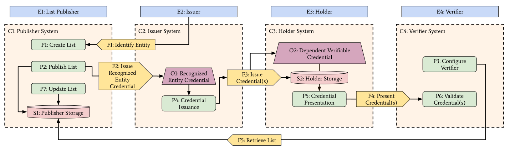

This document describes a threat model for the
Recognized
Entities specification. It identifies and analyzes security and
privacy threats specific to ecosystems that use
RecognizedEntityCredential resources to express recognition of
entities and the actions they are authorized to perform, such as issuing or
verifying verifiable credentials.
This threat model is a work in progress. It is published alongside the Recognized Entities specification to inform implementers and ecosystem designers of the security and privacy considerations relevant to deployments of the specification. Feedback and proposed additions are welcome via the issue tracker.
Threat modeling is a vital part of specification development. This document provides a threat model for the Recognized Entities specification, which defines a data model for expressing that one or more entities are recognized to perform specific actions — such as issuing or verifying verifiable credentials — within a particular ecosystem.
This threat model follows the methodology described in the W3C Threat Modeling Guide and uses the STRIDE taxonomy for classifying threats. Threats are grouped into four categories:
The Recognized Entities ecosystem enables a [=E1|list publisher=] — such as an
individual, a club or organization, a national business register, an
accreditation authority, or an industry consortium — to issue a
RecognizedEntityCredential ([=O1|O1=]) asserting that one or more
[=E2|issuers=] are recognized to perform specific actions. A [=E3|holder=] can
acquire a [=O2|dependent verifiable credential=] from such an issuer and
[=F4|present=] it to a [=E4|verifier=] alongside the
[=O1|recognized entity credential=], allowing the [=E4|verifier=] to confirm
both the integrity of the presented credential and the recognized status of its
issuer.
The core challenge is that a [=E4|verifier=] receiving a [=O2|dependent verifiable credential=] from an unknown [=E2|issuer=] must be able to determine, in an automated and cryptographically-verifiable way, whether that [=E2|issuer=] is recognized within the relevant ecosystem. The Recognized Entities specification addresses this by providing a data model for publishing recognition information as a [=O1|recognized entity credential=], enabling a [=E4|verifier=] to accept [=O2|dependent verifiable credentials=] from [=E2|issuers=] described by [=E1|recognized entity list publishers=].
For this threat model, we consider a minimal instantiation of the Recognized Entities ecosystem consisting of four roles: the [=E1|List Publisher=] (E1) who issues [=O1|recognized entity credentials=], the [=E2|Issuer=] (E2) who receives recognition and issues [=O2|dependent verifiable credentials=], the [=E3|Holder=] (E3) who receives and presents those credentials, and the [=E4|Verifier=] (E4) who validates the credential chain against a configured set of trusted list publishers.
Note: We do NOT model potential attackers as first-class elements, as over-characterizing attackers can lead to analysis bias that is better avoided.
The data flow diagram below illustrates the key elements and data flows in a minimal Recognized Entities ecosystem. The diagram shows how a recognized entity credential (O1) is issued by a list publisher (E1) to an issuer (E2), how the holder (E3) [=F4|presents=] a dependent verifiable credential (O2) alongside the recognized entity credential to a verifier (E4), and how the verifier [=F5|retrieves the published list=] from publisher storage (S1) to confirm the issuer's recognized status.

The following notation is used in the diagram description and dictionary:
| E1 List Publisher | An entity — such as an individual, club, organization, accreditation authority, national business register, or industry consortium — that issues recognized entity credetnials that assert that one or more entities are recognized to perform specific actions. The list publisher is the authority for any recognized entity credentials it issues. |
| E2 Issuer |
An entity — such as an individual, club university, trade exporter, or a
conformity assessment body — that has been granted a recognized entity
credential by a list publisher and uses it to issue dependent verifiable
credentials to holders. This entity controls an identifier document, such as a
CID or a DID, whose identifier appears as the credentialSubject.id
of the recognized entity credential and as the issuer of the
dependent verifiable credentials it produces.
|
| E3 Holder | A person or organization that receives a dependent verifiable credential from an issuer and presents it — optionally, together with the recognized entity credential — to a verifier. The holder stores credentials in a software application, such as a digital wallet, and controls what is disclosed to verifiers. |
| E4 Verifier | An entity — such as an individual, organization, customs authority, trade finance lender, or a market surveillance authority — that receives a credential presentation from a holder and must determine whether the issuer of that credential is recognized within the relevant ecosystem. The verifier is configured with one or more URLs that identify the list publishers, and lists, that it considers authoritative. |
| P1 Create List |
The process by which a list publisher vets an issuer to determine whether
they qualify for inclusion in a list, and, if so, creates and
cryptographically signs a new RecognizedEntityCredential,
applying the publisher's private key material to produce a verifiable proof.
|
| P2 Publish List |
The process by which a list publisher makes a signed
RecognizedEntityCredential publicly available, typically
via HTTPS, so that verifiers can retrieve it.
|
| P3 Configure Verifier | The process by which a verifier is configured with one or more recognized entity list publishers — the URLs or DIDs of list publishers whose recognized entity credentials the verifier will accept as authoritative, or recognized entity lists. |
| P4 Credential Issuance | The process by which an issuer signs and delivers a dependent verifiable credential to a holder. This process uses the issuer's private key material to produce a cryptographic proof over the credential. The process can optionally also result in the delivery of a recognized entity credential to the holder. |
| P5 Credential Presentation | The process by which a holder assembles and transmits a credential presentation — containing the dependent verifiable credential and optionally a recognized entity credential — to a verifier. |
| P6 Validate Credential(s) | The process by which a verifier checks the cryptographic proof of a presented dependent verifiable credential, resolves the issuer's recognized entity credential, and confirms that the issuer is recognized within a configured list. This process may involve fetching recognized entity credentials from external URLs or from holder-provided presentations. |
| P7 Update List |
The process by which a list publisher modifies an existing
RecognizedEntityCredential — for example to add, remove, or
revoke recognized entities — and re-publishes the updated credential.
|
| F1 Identify Entity | The data flow by which an issuer provides identity and vetting information to the list publisher's [=P1|Create List=] process, so that the publisher can determine whether to include the issuer in a recognized entity credential. |
| F2 Issue Recognized Entity Credential |
The data flow by which a list publisher delivers a signed
RecognizedEntityCredential to an issuer. This credential
asserts that the issuer's DID is recognized to perform one or more
specific actions within the relevant ecosystem.
|
| F3 Issue Credential(s) |
The data flow by which an issuer delivers a signed dependent verifiable
credential to a holder. The credential contains the issuer's DID as its
issuer value.
|
| F4 Present Credential(s) | The data flow by which a holder presents a dependent verifiable credential — and optionally a recognized entity credential — to a verifier. This flow crosses a security boundary between the [=C3|holder's system=] and the [=C4|verifier's system=]. |
| F5 Retrieve List | The data flow by which a verifier retrieves a recognized entity credential directly from the [=C1|list publisher's server=], either to confirm an issuer's current status or to obtain a more recent version of the credential than the one provided by the holder. |
| S1 Publisher Storage | The persistent storage within the [=C1|publisher system=] where recognized entity credentials are kept and made available for retrieval. This store is managed by the list publisher and is typically accessible to the public via HTTPS. |
| S2 Holder Storage | The persistent storage within the [=C3|holder's system=] where dependent verifiable credentials and recognized entity credentials are kept. This storage is accessible only to the holder's software within the [=C3|holder system=] boundary. |
| O1 Recognized Entity Credential | A cryptographically-signed data object issued by a list publisher to an issuer. It asserts that the issuer's DID is recognized to perform one or more actions — such as issuing or verifying specific types of verifiable credentials — within the ecosystem governed by the list publisher. |
| O2 Dependent Verifiable Credential | A cryptographically-signed data object issued by a recognized issuer to a holder. The credential asserts claims about the holder and is signed with the issuer's private key. Its trustworthiness depends on the issuer holding a valid recognized entity credential (O1), making it a "dependent" verifiable credential. |
| C1 Publisher System | The system boundary — typically a web server or DID-linked resource host — managed by the list publisher. It runs the [=P1|Create List=], [=P2|Publish List=], and [=P7|Update List=] processes and maintains Publisher Storage (S1) from which recognized entity credentials are served. |
| C2 Issuer System | The system boundary — typically a server or service operated by the issuer — that manages the issuer's credentials, keys, and DID. It runs the [=P4|Credential Issuance=] process and holds the recognized entity credential issued to the issuer. |
| C3 Holder System | The system boundary — typically a mobile or desktop application — that manages the holder's credentials, keys, and DID. All credential storage (S2) and [=P5|Credential Presentation=] logic runs within this system boundary, which is under the holder's control. |
| C4 Verifier System | The system boundary — typically an automated verification service or human-operated review system — that runs the [=P3|Configure Verifier=] and [=P6|Validate Credential(s)=] processes. It is configured with trust anchors identifying authoritative list publishers. |
A list publisher is an entity that issues
RecognizedEntityCredential resources. List publishers are
the authority for any recognized entity credentials they issue. They
range from national government bodies (such as business registers and
accreditation authorities) to industry consortia and standards organizations.
List publishers have a strong interest in ensuring that only properly vetted entities appear in their lists, and that their list credentials are not forged or misused. They also bear operational responsibility for the availability and integrity of the credentials they publish.
An issuer is any person or organization that has been granted a
RecognizedEntityCredential by a list publisher and uses
that recognition to issue dependent verifiable credentials to holders.
Examples include universities issuing academic credentials, national
business registers issuing trade entity credentials, and conformity
assessment bodies issuing product certificates.
The issuer's primary goal is to issue dependent verifiable credentials that will be accepted by verifiers within the relevant ecosystem. They want confidence that their recognized status is accurately represented, that their recognition credentials are not misappropriated or tampered with, and that their DID remains under their control.
A holder is a person or organization that receives dependent verifiable credentials from issuers and presents them to verifiers. In the cross-border trade use case, the holder is an importer presenting an exporter's invoice credential to customs. In the education use case, the holder is a student presenting a university-issued diploma.
The holder's primary goal is to present credentials that will be accepted by verifiers, without disclosing more information than necessary. Holders have a strong interest in privacy: they do not want their credential presentations to leak information about their activities to list publishers or other third parties.
A verifier is an entity that receives a credential presentation from a holder and must determine whether to accept it. Verifiers range from automated customs clearance systems processing thousands of trade documents per hour to human-operated market surveillance authorities checking product conformity certificates.
The verifier's primary goal is to confirm that the credential it has received was issued by an entity that is genuinely recognized within the relevant ecosystem, and that the credential itself has not been tampered with. Verifiers also have a strong interest in availability: a denial of service against the lists they depend on directly impairs their ability to function.
This threat model is maintained alongside the Recognized Entities specification. Feedback, bug reports, and proposed additions are welcome via the issue tracker.
To add a new threat to the model, provide the following components:
Create a JavaScript file following the pattern of the existing threat
files, register it with window.ThreatModel.register(threat),
add a <script> tag in index.html, and add
the threat ID to the appropriate category in
threats/outline.js.